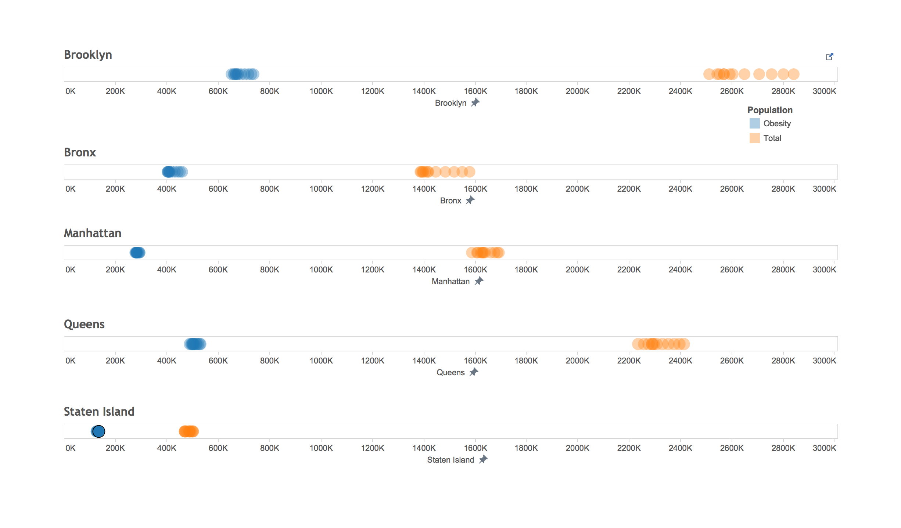

Drag slider to change year and visualize the growth in overall population and obese population in New York City
The above D3 visualization displays the increase in the total population and obese population in the city of New York from 2008 to 2013. In addition, we have used the predicted values for population from 2015 to 2040 to display the population explosion that we can expect in the next 3 decades. While we utilized the total population data from NYC OpenData, we corelated the increase in obese population for the same duration using R and creating a linear regression model that supported our claim that with the increase in total population, there will be an increase in the obese population in the city of New York.
Source(s): NYC OpenData, The New York City Department of Health and Mental Hygiene
Below is a step by step creation of the model in order to predict whether the obese population would increase with the increase in total population. In order to perform predictive analysis there were a few assumptions that we needed to make and ensure that the model was a good fit within those assumptions.
Adult Consumption of Sugary Drinks (1+/day) - Number of Adults Reporting
Calculation: Estimated number of adults who, on average reported having consumed one or more sugary drinks per day. Sugary drinks include soda, sweetened iced tea, sports drinks, fruit punch, and other fruit flavored drinks. (One drink equals 12-ounces.) Diet soda, sugar free drinks, 100% juice, and seltzer are not included.
Source(s): New York City Community Health Survey (CHS)
Adult Consumption of Sugary Drinks (1+/day) - Percent
Calculation: Estimated number of adults who, on average reported having consumed one or more sugary drinks per day, divided by all adults in the area; expressed as a percent. Sugary drinks include soda, sweetened iced tea, sports drinks, fruit punch, and other fruit flavored drinks. (One drink equals 12 ounces). Diet soda, sugar free drinks, 100% juice, and seltzer are not included.
Source(s): New York City Community Health Survey (CHS)
Overweight or Obese Adults - Number
Calculation: Estimated number of adults classified as overweight or obese; based on the Body Mass Index (BMI) calculated from self-reported weight and height, rounded to the nearest 1,000. A BMI between 25 and 29.9 is classified as overweight, and a BMI of 30 or greater is classified as obese.
Source(s): New York City Community Health Survey (CHS)
Overweight or Obese Adults - Percent
Calculation: Estimated number of adults classified as overweight or obese; based on the Body Mass Index (BMI) calculated from self-reported weight and height, expressed as a percent. A BMI between 25 and 29.9 is classified as overweight, and a BMI of 30 or greater is classified as obese.
Source(s): New York City Community Health Survey (CHS)
Creating the linear regression model:
When conducting any statistical analysis it is important to evaluate how well the model fits the data and that the data meets the assumptions of the model.
Cross-validation:is a technique used to protect against overfitting in a predictive model, particularly in a case where the amount of data may be limited. In cross-validation, you make a fixed number of folds (or partitions) of the data, run the analysis on each fold, and then average the overall error estimate.
Mean square error:representing the difference between the actual observations and the observation values predicted by the model, is used to determine the extent to which the model fits the data and whether the removal or some explanatory variables, simplifying the model, is possible without significantly harming the model's predictive ability.
Through the Tableau visualization we are trying to show how with each year there is an increase in not only the total population in the city of New York but also an increase in the obese population.
It is important to note that four of the top ten causes of death in the United States are caused by obesity. These are - Heart diseases, Strokes, some forms of Cancer and Type 2 Diabetes. While we realize that obesity does not always lead to these diseases, the fact that these diseases are more prevalent in obese people is something that cannot be disregarded.